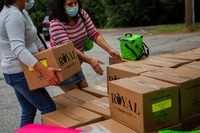
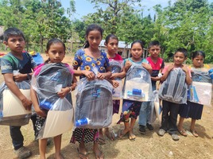
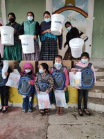

Our Projects
Feed the Children Project
A non-profit initiative dedicated to addressing food insecurity among underprivileged children in Guatemala. The project aims to provide balanced and culturally sensitive meals during the summer months, promoting healthy growth, development, and learning. Key activities include needs assessment, menu planning, meal preparation, volunteer recruitment, and monitoring. The program also emphasizes community engagement and awareness. By executing this project, we hope to alleviate hunger, improve academic performance, and strengthen the sense of community among beneficiaries..
Ready for Success: Back-to-School Support Project for Guatemalan Youth
The "Ready for Success" project aims to equip young Guatemalans with essential back-to-school items, reducing financial burdens on families and promoting active engagement in education. Through targeted distribution of school supplies and community engagement efforts, this initiative strives to empower the next generation of leaders, ensuring they have the tools they need for academic success and a brighter future.
AquaVida: Clean Water Access Project for Guatemalan Families
The AquaVida project seeks to provide reliable access to clean water for vulnerable Guatemalan families. Through the installation of sustainable water infrastructure and comprehensive hygiene education, this initiative aims to improve health, sanitation, and overall well-being within target communities. By empowering communities to manage their water resources, AquaVida aims to create a lasting impact on the lives of families, contributing to their long-term development and resilience.
